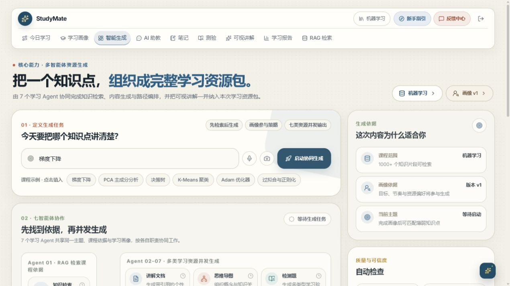
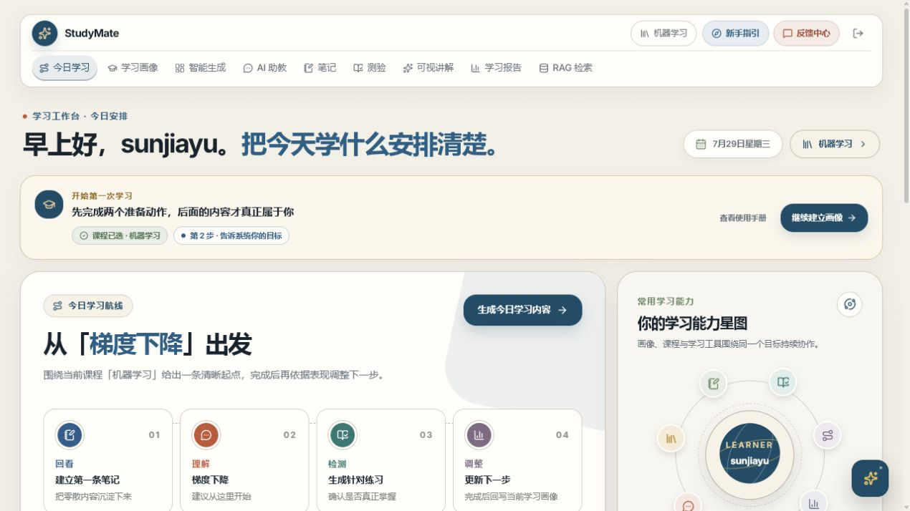
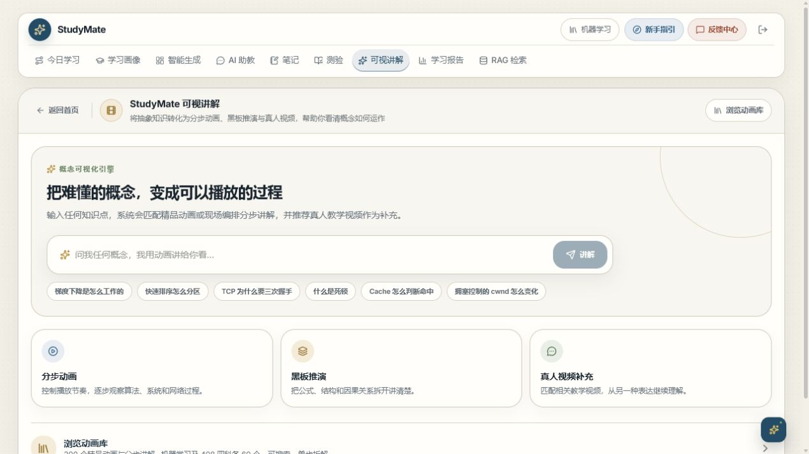
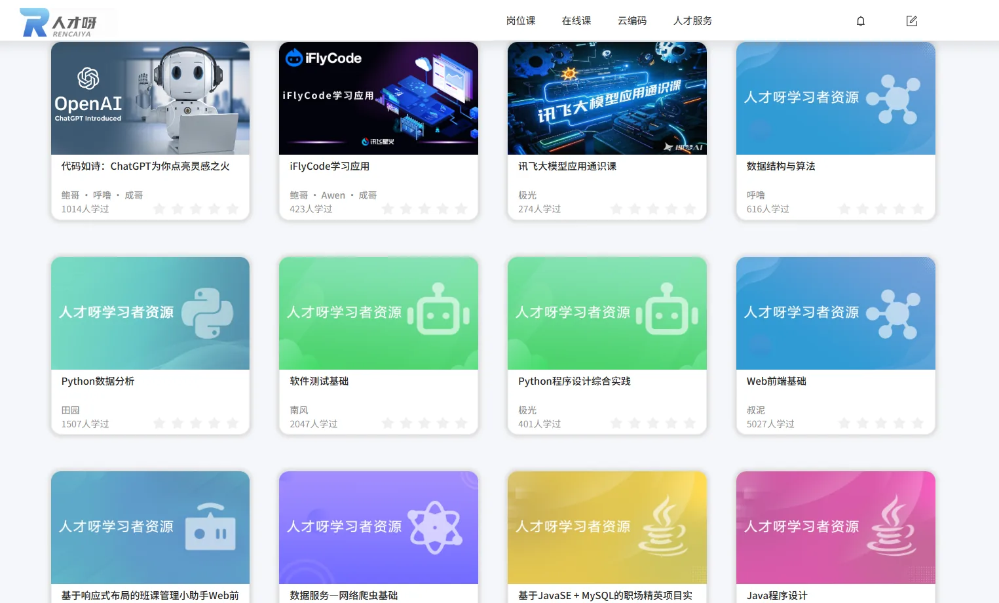
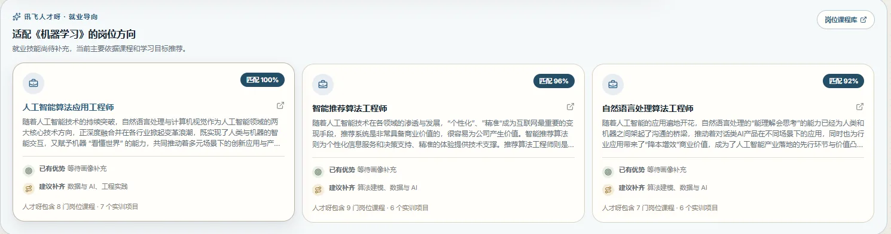
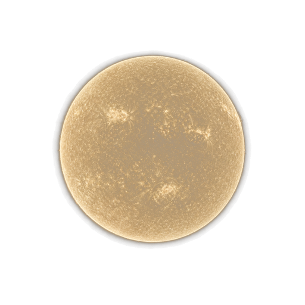
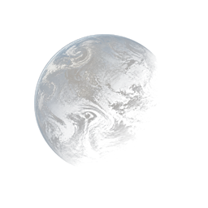
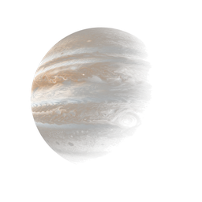
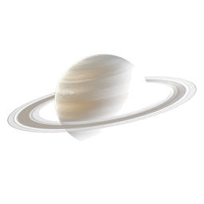

LEARNING EVIDENCE · 01
真实课程知识，转化成今天能执行的路径。
系统结合课程知识库和你的学习画像，组织讲解、导图、代码、练习与阅读材料，把“我不懂”拆成一系列可以完成的动作。
✓每个结论可以追溯课程原文
✓讲解方式随认知风格调整
✓测验结果继续更新学习画像

StudyMate 连接课程知识、学习画像与多智能体协作，让讲解、练习和反馈围绕每一位学习者持续运行。
从课程原文到可视讲解，从练习结果到画像更新。每一步都留下可以继续使用的学习证据，而不是结束在一次对话里。
系统结合课程知识库和你的学习画像，组织讲解、导图、代码、练习与阅读材料，把“我不懂”拆成一系列可以完成的动作。



“我们先不记公式，看看梯度下降每一步究竟改变了什么。”
数字人不需要复杂的 3D 建模。真实讲师形象、自然声音和轻量口型配合，就足以让一次语音学习更有陪伴感。
StudyMate 以讯飞生态贯穿听、学与职业探索，并由星火 × DeepSeek 双引擎及国产模型矩阵协同驱动。
服务端配置选用；助教 / PPT 采用专项模型白名单。
资源聚合、画像更新与职业探索沿同一条成长路径推进。


七种学习能力沿着不同轨道持续协作，而你始终位于系统的中心。准备好之后，从右下角进入 StudyMate，开始建立自己的学习路径。



